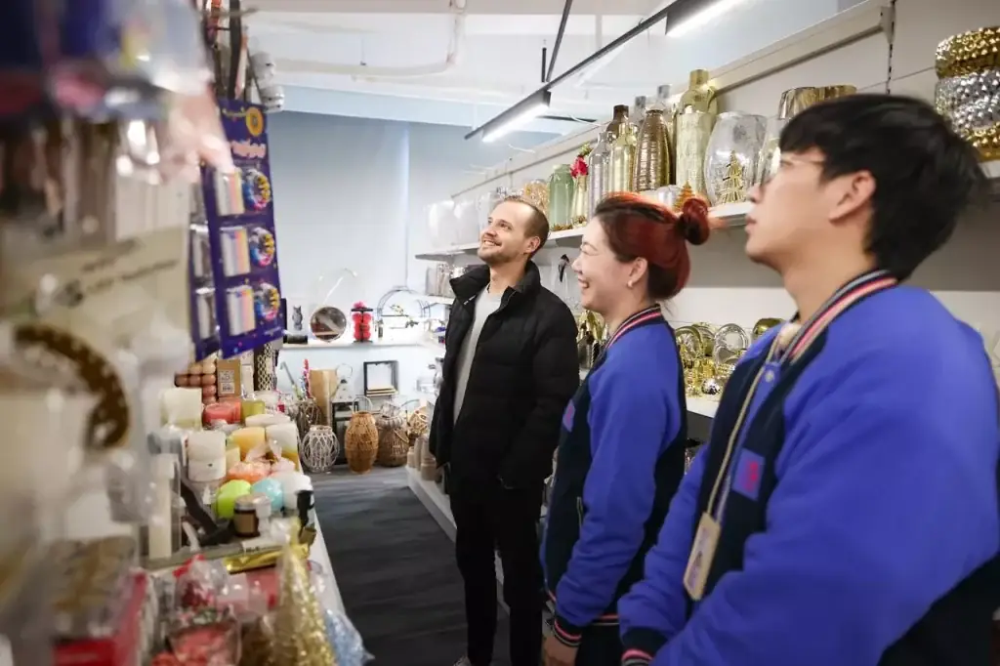

What makes outdoor and garden sourcing different?
Outdoor furniture and garden products sourcing from China often combines bulky furniture, nestable planters, small tools and fragile decor in one order. A sourcing agent helps coordinate category-specific suppliers, comparable specifications, samples, packaging and readiness dates within the agreed scope.
ROYAL UNION is a Yiwu-based China sourcing and supply-chain partner backed by MU Group. We can coordinate a B2B sourcing brief and China-side execution; product suitability, supplier capability, pricing and timing must be confirmed for each project.

1. Build a range around the buyer's selling format
A garden centre, a homeware retailer and an online patio-furniture brand need different assortments. Begin with destination, customer use, price positioning, available display space and storage capacity. Avoid selecting a collection purely because the catalogue photos share a colour.
These groups are examples for a sourcing brief, not a promise of stock or a fixed catalogue. Keep plants, seeds, agricultural chemicals and other specialist regulated goods outside a general manufactured-products brief unless their requirements have been separately reviewed.
Use one assortment sheet with buyer SKU, dimensions, colour, quantity, target cost basis, supplier, carton data and readiness date. Set minimum quantities by model and finish; a combined container does not remove individual supplier MOQs.
2. Define what “outdoor use” means
“Weatherproof” is too broad to control a purchase order. Describe the expected environment: covered balcony or open garden, exposure to sun and rain, proximity to the sea, temperature conditions and whether customers will store the product indoors between seasons.
- Metal components: specify the material, construction, coating and the corrosion-resistance evidence needed for the intended conditions.
- Plastic or woven components: define material, construction, colour and any required evidence for UV exposure or loading.
- Wood or board: identify the material, finish, moisture expectations, care instructions and documentation required by the buyer and destination.
- Cushions and textiles: confirm fabric, filling, seams, fastening, care and the exact meaning of any water-resistance claim.
Agree a relevant test method and acceptance criteria where performance claims need evidence. A showroom sample or a material name alone does not establish long-term durability. Do not label products as certified, sustainable or suitable for every climate without applicable supporting evidence.
3. Approve the collection and the individual products
For a coordinated collection, ask suppliers to work from the same physical or documented colour reference. A green planter, woven chair and cushion may look different under daylight even when all three quotations use the word “sage.” Agree acceptable variation and review samples together where practical.
Product checks should then reflect the item: assembly and stability for a table, fastening and function for a chair, drainage and surface defects for a planter, or handle attachment and operation for a tool. Define checks and any specialist testing before mass production.
Keep approved sample references, drawings, bill-of-material details where agreed, inspection criteria and packaging versions linked to each SKU. Specify which changes require fresh approval. For knock-down furniture, review the manual, hardware bag, spare parts and carton labels as part of the sample—not after production.
4. Compare packed volume, not only unit prices
A low-priced garden item can be expensive to move if its carton is oversized or poorly protected. Request units per carton, external carton dimensions, gross and net weight, pallet needs and whether the product is shipped assembled, stacked, nested or knocked down.
Carton CBM = length × width × height in metres. Use confirmed packed measurements, not product dimensions, then account for pallets, loading constraints and protective space. This calculation estimates volume; it is not a freight quotation or a guarantee of container capacity.
- Protect chair legs, table edges, coated surfaces and protruding hardware.
- Use suitable separators for nested planters so packing efficiency does not create scratches.
- Keep heavy tool cartons from loading onto fragile decor or lightweight furniture components.
- Label furniture components and hardware so receiving teams can identify complete sets.
- Agree a packaging validation method suited to the actual handling and distribution route.
Compare packaging savings against assembly effort, damage exposure and return handling. E-commerce delivery may need a different pack from a store-bound consolidated pallet. See the total sourcing cost guide for separating goods, services and logistics costs.
5. Manage supplier readiness before booking the shipment
Multi-category sourcing creates a scheduling problem: one late furniture component can leave the rest of the collection waiting. Track sample approval, production completion, inspection, corrective actions and warehouse arrival separately for each supplier.
Before consolidation, agree receiving references, carton counts, discrepancy reporting and the conditions for releasing goods. Decide whether an incomplete set should be held or whether approved products can ship separately. Do not assume every supplier is ready because a single purchase-order date has been reached.
At the warehouse, reconcile the packing list and record damaged, missing or mismatched cartons. Prepare the loading plan using confirmed measurements and weight limits. Destination handling, transport documents and product requirements should be agreed with the parties responsible for them.
6. Prepare an actionable outdoor and garden enquiry
Send photos or drawings, the destination country, selling channel, outdoor-use conditions and quantities per SKU. Add dimensions, materials, finishes, expected packaging, target cost basis and the required arrival date. Include known testing or documentation needs and whether you want one consolidated shipment.
Specify the China-side support you require: supplier research, comparable quotations, samples, customization, quality-check coordination, receiving, consolidation or export preparation. ROYAL UNION can coordinate the agreed tasks and clarify the missing decisions before an order proceeds.
A practical first step is a focused shortlist rather than an unlimited catalogue request. It gives the sourcing team enough information to compare appropriate suppliers while keeping your collection, budget and delivery plan connected.
Frequently asked questions
Can outdoor furniture and garden accessories be sourced together?
Yes, as a mixed-category B2B project when the required supplier research, quality checks, receiving and consolidation are agreed. Each item still needs its own specification, minimum quantity, packing information and readiness date.
How do I compare patio furniture suppliers in China?
Compare the same dimensions, materials, construction, finish, intended use, packaging and evidence requirements. Confirm sample terms, quantities, production assumptions and replacement-part arrangements before comparing prices.
Does outdoor furniture automatically withstand all weather?
No. Intended exposure, materials, construction, coatings and relevant test evidence must be reviewed. A general outdoor or weatherproof description is not a substitute for agreed performance criteria.
Can nesting and knock-down packaging reduce shipping volume?
They can reduce packed volume for some products, but savings must be checked against protective packing, assembly requirements, damage exposure and the actual loading plan. Use confirmed carton measurements.
What should I send to request a garden products sourcing plan?
Send product photos or drawings, intended use, destination, sales channel, dimensions, materials, quantity per SKU, packaging, target cost basis and required arrival date. Identify any testing needs and whether consolidation is required.
B2B sourcing enquiries
Build one coordinated outdoor and garden order.
Send your product references, quantity per SKU, destination and required arrival date. We will review the requirements for a project-specific sourcing plan.